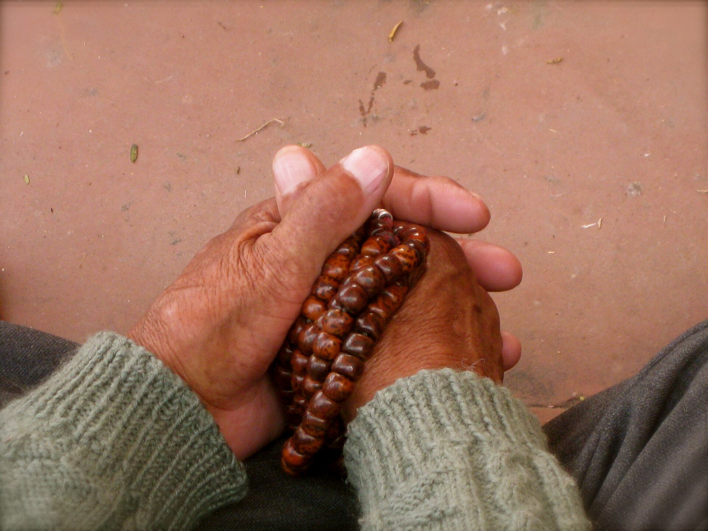

僧众讽诵经咒（图源 Wikimedia Commons，CC BY-SA 4.0）
关于这份谱曲（先读）
本谱集汉传丛林早课"十小咒"十首陀罗尼：如意宝轮王、消灾吉祥、功德宝山、准提、圣无量寿决定光明王、药师灌顶、观音灵感、七佛灭罪、往生、大吉祥天女。旋律以五声音阶循环套用，咒心及回向处移高八度，显庄严轻安。
简谱中无点数字＝中音，数字上方虚点＝高八度。每字一音，句末字拖长。注音依汉传梵呗读音，咒语部分历来各家读法不一，诵持请以师承为准。

佛珠（图源 Wikimedia Commons，CC BY-SA 3.0）
简谱图例：
宫 1 · 商 2 · 角 3 · 徵 5 · 羽 6 ＝ C 大调五声音阶；
5 表示高八度（数字上方虚点）。每字一音，句末字拖长。
[就绪] 点「▶ 播放」开始讽诵（进度条可点击跳转）